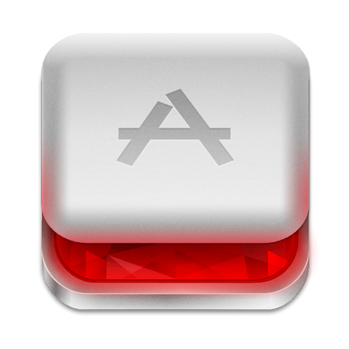
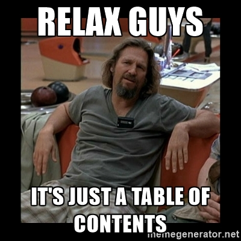
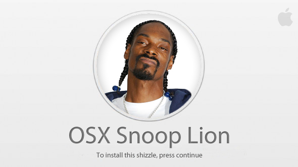
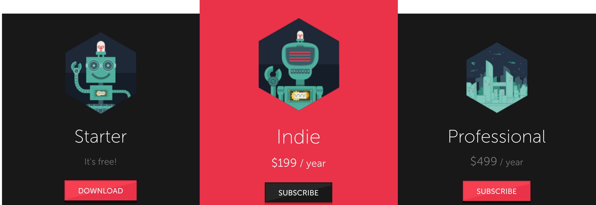
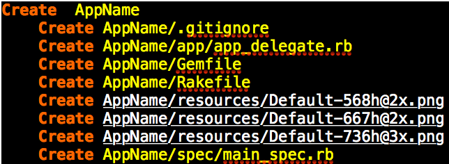
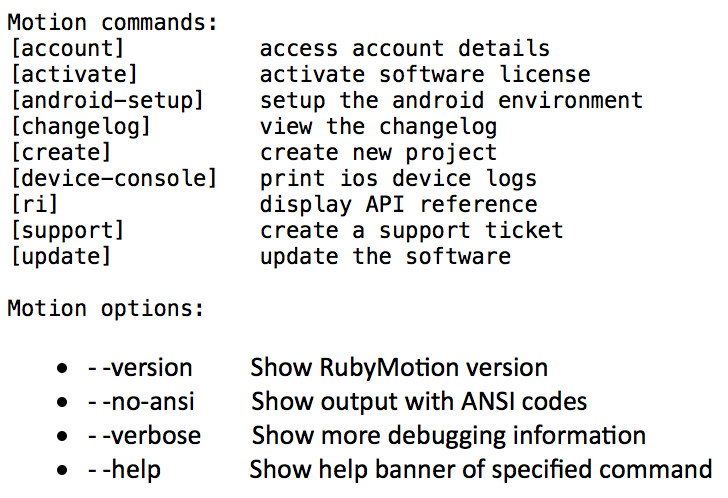
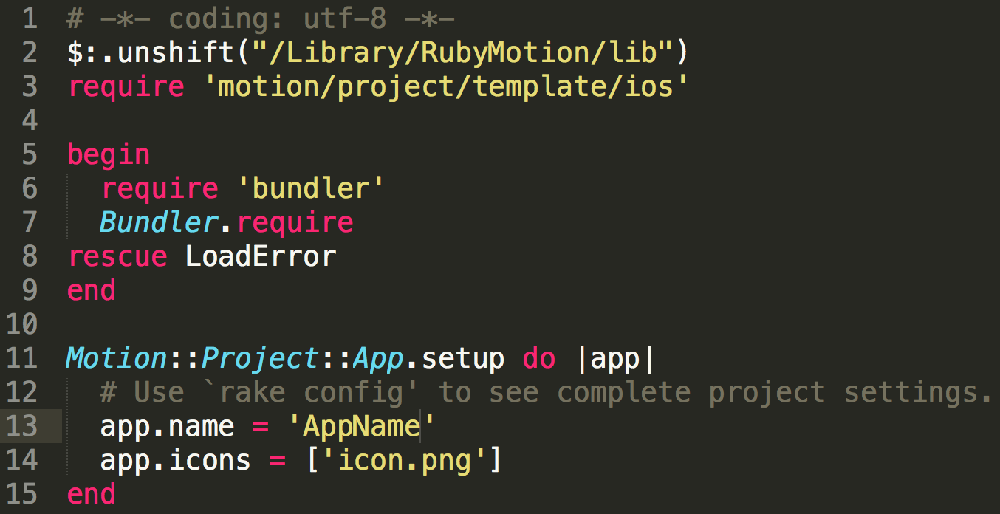
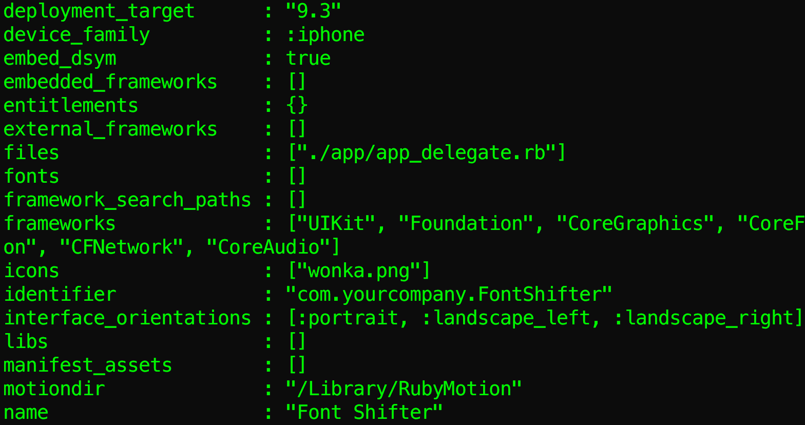
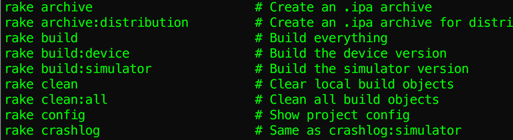
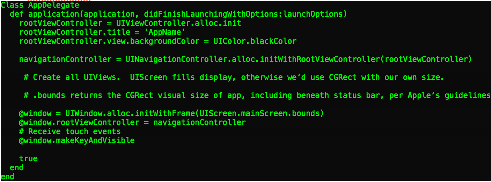

Alex Henry
Twitter: @Alex_Henry21
Email: alexanderhenry21@gmail.com
RubyMotion:
Our First App

Talk Contents

- What Is RubyMotion?
- A Bit of History
- Installation & Configuration
- RakeFile: App Name & Icon
- App Delegate
- Live Demo
- Labels
- Toggle Switch & Checkbox
- Slider
- Text Field
- Picker Wheel
- Resources
What is RubyMotion?
RubyMotion utilizes the Ruby language, allowing Ruby applications to run natively on iOS, OS X, and Android.
Requirements:
- OS X 10.9 or higher
- Join the Mac developer program to ship apps (OS X)
- iOS SDK (iOS)
- Join iOS developer program for app-signing cert (iOS)
- Join Google Play program (Android)
- Android device configured for development (Android)

Setting Up RubyMotion
rubymotion.com/download

Follow the installer instructions to install.
Launch Terminal and run motion create AppName

Commands
cd AppName
Commands are run from this directory.

RakeFile
This is where configuration of the app is done.
Open the RakeFile using your favorite text editor.

$:.unshift will search /Library/RubyMotion/lib for other requires
Rake Config
rake config will show settings for the app.

Rake Tasks
rake --tasks will display tasks for the app.

App Delegate
The app_delegate is an object for the OS to respond to events during the process.
It receives callbacks when the app starts, ends, gets notifications, etc.

Named Arguments
- Ruby (old): obj.shape(color, size)
- Obj C: [obj.shapeColor: color andSize: size];
- RubyMotion: obj.shapeColor(color, andSize: size)